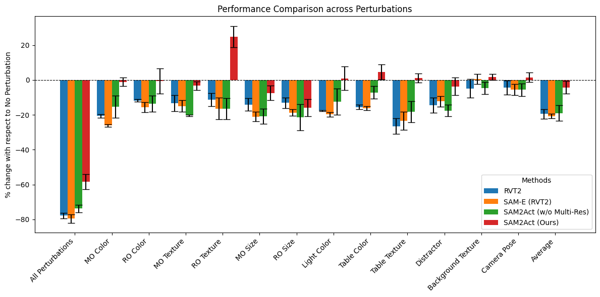

Summary
1. Overview of SAM2Act and SAM2Act+
The SAM2Act architecture leverages the SAM2 image encoder to generate prompt-conditioned, multi-resolution embeddings, fine-tuned with LoRA for efficient adaptation to manipulation tasks. A multi-view transformer aligns spatial coordinates with language instructions, while a cascaded multi-resolution upsampling mechanism refines feature maps and generates accurate translation heatmaps. SAM2Act+ extends this architecture by incorporating memory-based components, including the Memory Encoder, Memory Attention, and Memory Bank, into the coarse branch. These components enable memory-driven reasoning by processing historical heatmaps and integrating prior observations, allowing the agent to predict actions based on stored contextual information. Observations are reconstructed into point clouds, rendered into three virtual images, and lifted into 3D translation points, enabling precise spatial reasoning across both architectures.
Experiments and Results
2. Results

SAM2Act outperform all other baselines, and achieve highest performance on the RLBench 18 tasks.
